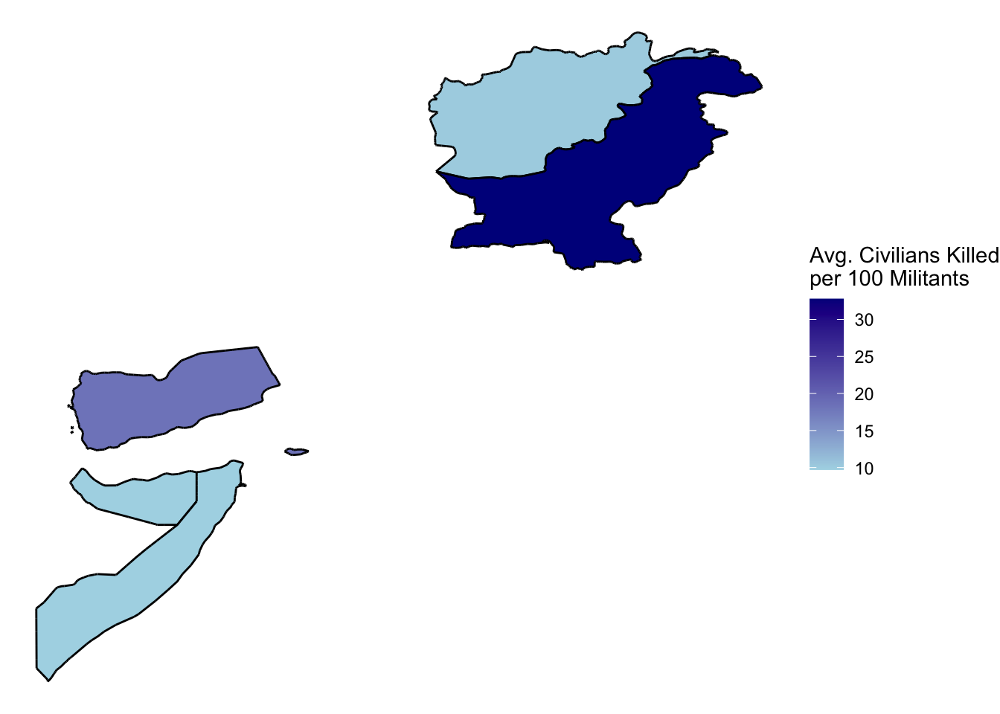
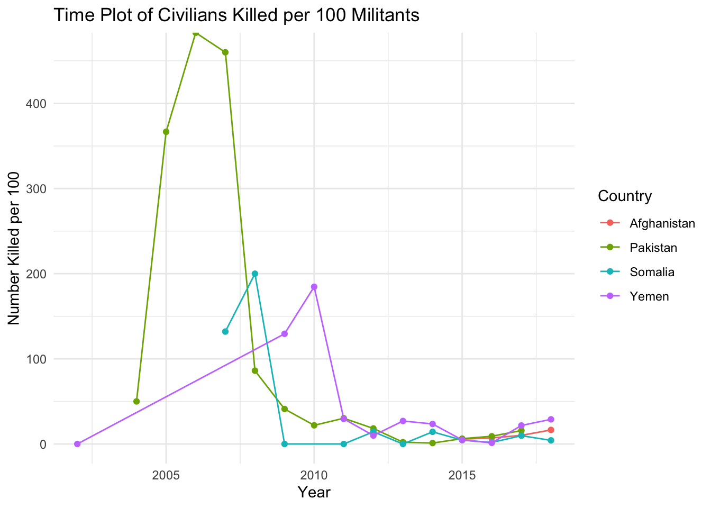

library(tidyverse)
library(here)
airstrikes <- read_csv(here("data/DroneWarsData2.csv"))library(lubridate)
# airstrikes tidy
airstrikes_tidy <- as_tibble(airstrikes) |>
mutate(Date = mdy(`Date (MM-DD-YYYY)`)) |>
select(!c(`Date (MM-DD-YYYY)`, 18:36)) |>
relocate(Date) |>
mutate(Longitude = as.numeric(Longitude), Latitude = as.numeric(Latitude))
airstrikes_tidy <- airstrikes_tidy[complete.cases(airstrikes_tidy[, 1:17]),]Introduction
Welcome to my 1st Blog Post!
The data set I will be working with is shown below.
head(airstrikes_tidy)# A tibble: 6 × 17
Date `Strike ID` Country President `Most Specific Location`
<date> <chr> <chr> <chr> <chr>
1 2009-01-01 B50 Pakistan Bush Kari Kot, South Waziristan, Pakistan
2 2010-01-01 Ob53 Pakistan Obama Ghundikala, North Waziristan, Pakis…
3 2011-01-01 Ob181 Pakistan Obama Mandi Khel, North Waziristan, Pakis…
4 2011-01-01 Ob182 Pakistan Obama Mandi Khel, North Waziristan, Pakis…
5 2011-01-01 Ob183 Pakistan Obama Datta Khel, North Waziristan, Pakis…
6 2011-01-01 Ob184 Pakistan Obama Boya, North Waziristan, Pakistan
# ℹ 12 more variables: `Most Specific Lat/Long` <chr>, Latitude <dbl>,
# Longitude <dbl>, `Minimum total people killed` <dbl>,
# `Maximum total people killed` <dbl>,
# `Minimum civilians reported killed` <dbl>,
# `Maximum civilians reported killed` <dbl>,
# `Minimum children reported killed` <dbl>,
# `Maximum children reported killed` <dbl>, …The main variables that are of interest to me is Date, Strike ID, Country, President, Reportedly drone?, US confirmed?, Maximum total people killed, and Maximum civilians reported killed. Now just because I have an interest in these variables doesn’t mean they all will be utilized in my visualizations. In total this data set contained 1692 total observations, each one being a different air strike.
As of my question of interest, I’ll be investigating the question, “Are there areas in the experiencing more civilian harm than others?”
Data Context
The data was obtained from Github (https://dronewars.github.io/data/). The data was gathered from a collection of news reports, statements, documents, press releases, images, and videos from national and international outlets. All this information was obtained through The Bureau of Investigative Journalism, an independent and non-profit organization.
The air strikes in the data are from the time period of November 3, 2002 - November 25, 2018. The data set provided insights into the geographic distribution of drone strikes across Afghanistan, Pakistan, Somalia, and Yemen.
The data set also records the number of casualties resulting from air strikes, categorizing them as civilian(innocent or children) or militant.
Visualizations
Attaching package: 'maps'The following object is masked from 'package:purrr':
mapmap_data <- map_data("world", regions = c("Yemen", "Somalia", "Pakistan", "Afghanistan"))
map_strikes <- left_join(map_data, airstrikes_tidy, by = c("region" = "Country"))
map_summary <- map_strikes |>
group_by(region) |>
summarise(civilian_ratio = sum(`Maximum civilians reported killed`) / sum(`Other (Non-civilian/children Killed)`) * 100)
map_strikes <- left_join(map_strikes, map_summary, by = "region")
ggplot(map_strikes, aes(x = long, y = lat , group = group , fill = civilian_ratio)) +
geom_polygon(color = "black") +
scale_fill_gradient(low = "lightblue", high = "darkblue", name = "Avg. Civilians Killed\nper 100 Militants") + theme_void() 
The map illustrates the average number of civilians killed per 100 classified militants in each country. Pakistan stands out with a notably high average, indicating a significant impact of drone strikes on civilian populations within the country. Somalia and Yemen also show relatively high averages compared to Afghanistan. The visualization underscores the disproportionate toll on civilian lives in regions affected by drone strikes, emphasizing the need for careful consideration of collateral damage and civilian protection in military operations.
strikes_time <- airstrikes_tidy |>
group_by(year(Date),Country) |>
summarise(ratio_civilians = sum(`Maximum civilians reported killed`) / sum(`Other (Non-civilian/children Killed)`) * 100)`summarise()` has grouped output by 'year(Date)'. You can override using the
`.groups` argument.ggplot(data = strikes_time, mapping = aes(x = `year(Date)`, y = ratio_civilians, colour = Country)) + geom_line() + geom_point() + scale_color_discrete() + theme_minimal() + labs(title = "Time Plot of Civilians Killed per 100 Militants", x = "Year", y = "Number Killed per 100")
This time series plot visualizes the trend of civilians killed per 100 militants over the years across different countries affected by drone strikes. Each line represents a specific country, color-coded for easy identification.
The data shows a sharp increase in civilian casualties in Pakistan from 2004 to 2007, with figures reaching alarming levels in 2005 and 2007.
Afghanistan’s data, available from 2015 on wards, indicates a moderate level of civilian casualties per 100 militants
Yemen shows varying trends, with minimal spikes in civilian casualties throughout the years.
Somalia experiences relatively lower but fluctuating levels of civilian casualties compared to Pakistan. Notable spikes occur in 2007 and 2008, followed by periods of decreased casualties.
Conclusion
Flaws & Future Direction
The data set may suffer from limitations such as incomplete or inaccurate reporting. Especially from particularly in conflict zones where access to information is restricted. Also, the map and time series plot focus on specific variables such as civilian casualties and their trends over time. But, it is pretty limited in providing a comprehensive understanding of the broader impact of drone warfare. Such as the emotional toll, the economic effects, and the long term injuries and illnesses that civilians are more likely to endure.
In the future I could incorporate more analysis and contextual information to provide a more nuanced understanding of the factors influencing civilian casualties in drone warfare. Thing such as examining political, social, and economic dynamics will give better context. I could also add text to label the countries in my map.
Connection to Class
The time series plot and map visualization derived from the Drone Wars data set offer effective ways of communicating information about civilian casualties in regions affected by drone warfare. The time series plot enables comparison of different countries by visualizing trends of civilian casualties per 100 militants over time. This helps facilitate a effective way to do comparisons between regions and time periods.
Similarly, the map visualization presents spatial data in a clear and readable fashion, displaying the geographical distribution of average civilian casualties per 100 militants across different countries. The use of color gradients emphasizes areas with higher or lower levels of civilian harm, allowing for easy comparison between regions and highlighting regional disparities. Both visualizations I believe leverage temporal and spatial data to provide insights into trends and patterns. Along with effectively communicating complex information in an accessible manner.